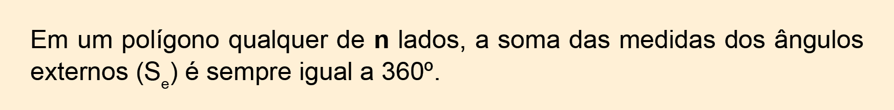

100
Unidade 5 - Ângulos e diagonais de um polígono

Calçada com revestimento retangular. Bremen, Alemanha, 2017.(kathuw56/Flickr)
101

Calçada com revestimento hexagonal. Pavimentação em São João Evangelista, MG, 2017.(Pac/Flickr)
As imagens apresentadas mostram alguns pisos revestidos por peças cujas formas se assemelham às figuras geométricas.
Quando vamos fazer uma calçada ou escolher o piso de um cômodo da casa nos deparamos com várias opções. Estas peças, muitas vezes, apresentam formas geométricas conhecidas.
CONVERSE

- Você já observou as formas geométricas mais utilizadas para compor os pisos? Que formas são essas?
- Em sua opinião, por que essas formas geométricas são mais utilizadas?
102
CAPÍTULO 1 - Ângulos de um polígono
Soma das medidas dos ângulos internos de um polígono
-
Vamos iniciar nosso estudo relembrando a soma das medidas dos
ângulos internos de um triângulo. Para isso, em dupla, sigam os
passos a seguir:
- Para começar, peguem uma folha em branco e desenhem um triângulo, como indicado abaixo.
- Em seguida, indiquem e pintem os ângulos , e , cada um com uma cor diferente. Pintem também, com as mesmas cores, os ângulos localizados no verso do desenho. Depois, recortem o triângulo.
- Dobrem a representação do triângulo que vocês desenharam de modo que o vértice A coincida com . A dobra deve ser paralela ao lado .

- Dobrem uma parte do triângulo, fazendo com que o vértice B coincida com o vértice A.
103
- Para finalizar, procedam da mesma forma com o vértice c. Dessa maneira, temos que o vértice A coincide com o B e o c.

Agora, respondam no caderno:
- Qual é a soma das medidas dos ângulos , e ? Expliquem como vocês encontraram essa soma.
Qual é a soma das medidas dos ângulos internos de um triângulo?
Observe agora outra forma de mostrar que a soma das medidas dos ângulos internos de um triângulo é igual a 180º.
No desenho a seguir, a reta r é paralela ao lado e as medidas dos ângulos internos do triângulo ABC estão indicadas por A, B e c.
Dessa forma temos:
- b = x, pois são ângulos alternos internos;
- c = y, pois são ângulos alternos internos;
- x + a + y = 180º.
Logo, a + b + c = 180º.
Vamos calcular a soma das medidas dos ângulos internos de um quadrilátero qualquer, utilizando a soma das medidas dos ângulos internos de um triângulo. Para isso, devemos traçar uma das diagonais do quadrilátero, dividindo-o em dois triângulos. Veja:

104
Já sabemos que a soma das medidas dos ângulos internos do triângulo I é igual a 180º, bem como a soma das medidas dos ângulos internos do triângulo II. Portanto, a soma das medidas dos ângulos internos do quadrilátero ABCD é igual a 2 · 180º = 360º.
Vejamos agora como calcular a soma das medidas dos ângulos internos de um pentágono.
A partir do vértice A, vamos dividir o pentágono em três triângulos.

Como a soma das medidas dos ângulos internos de cada triângulo é igual a 180º, temos que a soma das medidas dos ângulos internos do pentágono ABCDE é igual a 3 · 180º = 540º.
Observe o quadro a seguir.
|
Nome do polígono |
Número de lados |
Número de triângulos formados |
|
triângulo |
3 |
1 |
|
quadrilátero |
4 |
2 |
|
pentágono |
5 |
3 |
Comparando o número de lados de um polígono qualquer com o número de triângulos formados, percebemos que um polígono de n lados será formado por (n - 2) triângulos. Como a soma das medidas dos ângulos internos de um triângulo é 180º, temos que:
Em um polígono qualquer de n lados, a soma das medidas dos ângulos internos () pode ser calculada por:
Um polígono é chamado de regular quando todos os ângulos têm a mesma medida e todos os lados são congruentes.
Em um polígono regular, podemos calcular a medida de cada ângulo interno dividindo a soma das medidas dos ângulos internos (Si) pelo número (n) de lados do polígono.
ou
105
Observe a situação a seguir:

Um decágono tem dez lados, então n = 10.
Determinando a soma das medidas dos ângulos internos, temos:
Si = (10 - 2) ∙ 180º = 8 ∙ 180º = 1 440º
Como o polígono é regular, temos que a medida de cada ângulo interno é dada por:
Logo, cada ângulo interno do decágono regular mede 144º e a soma das medidas dos ângulos internos é igual a 1 440º.
Observe o hexágono ABCDEF e sua divisão em triângulos.

Copie o quadro em seu caderno e preencha com as informações necessárias para calcular a soma das medidas dos ângulos internos de cada um dos polígonos.

106
-
Calcule a medida do ângulo interno de cada um destes polígonos:
- hexágono regular.
- octógono regular.
- eneágono regular.
-
Qual é o polígono cuja soma das medidas dos ângulos internos é igual
a:
- 1 800º?
- 3 240º?
-
Calcule a soma das medidas dos ângulos internos do:
- polígono de 13 lados;
- polígono de 17 lados.
-
Calcule as medidas dos ângulos desconhecidos em cada uma das
figuras.
-
- Quantos lados tem um polígono regular cuja medida de cada ângulo interno é igual a 160º?
Muitos mosaicos são formados por figuras planas que se encaixam perfeitamente, sem sobrar espaços entre elas. Nos mosaicos a seguir, calcule a medida de cada ângulo interno das figuras que os compõem, sabendo que elas são formadas por:
-
pentágonos regulares e quadriláteros;
![a) Ilustração de um mosaico de quatro linhas, formado por pentágonos e losangos. Os pentágonos estão lado a lado, unidos pelos vértices laterais. Na primeira e segunda linha do mosaico tem três pentágonos, intercalados por cores, azul e vermelho. Os pentágonos da segunda linha estão invertidos e encaixados aos pentágonos da primeira linha pela base. Na terceira linha tem 4 pentágonos verdes, encaixados aos pentágonos da terceira linha pelos lados. E na quarta linha, outros quatro pentágonos, bege, invertidos, estão encaixados aos pentágonos da terceira linha pela base. Nos espaços entre os pentágonos formam-se losangos.](../../resources/images/8ANO_U5_image/U6_07.png)
- hexágonos regulares e quadriláteros.
-
pentágonos regulares e quadriláteros;


Calcule as medidas dos ângulos internos dos triângulos, sabendo que x é a medida, em graus, de determinado ângulo.
- , e x.
- 3x, x e 4x.
- , e x.
-
Determine as medidas dos ângulos internos dos quadriláteros, sabendo
que y é a medida, em graus, de
determinado ângulo.
- y, 5y, 2y e 4y.
- , , y e 2y.
- 105º, y, 2y e 3y.
- No trapézio ABCD, x e y representam as medidas de dois ângulos internos.
Determine os valores de x e y.
107
-
Na figura, as retas t e
u são paralelas. Calcule a
medida do ângulo α + β.
![Ilustração de duas retas paralelas, horizontalmente, a de cima denominada t, e a de baixo denominada u. Na região interna, entre a reta t e a reta u, há dois vértices. O primeiro vértice está localizado na parte superior esquerda da região interna, com ângulo demarcado em 30°. Deste vértice saem dois seguimentos de reta, o primeiro, inclinado para direita e para cima, toca a reta horizontal t, com ângulo demarcado α (alfa), e o segundo seguimento, inclinado para a direita e para baixo, se encontra com um terceiro seguimento, formando o segundo vértice, localizado na parte inferior direita, com ângulo demarcado β (beta). Esse seguimento está inclinado para esquerda e para baixo, tocando a reta horizontal u, com um ângulo demarcado em 50°.](../../resources/images/8ANO_U5_image/U6_10.png)
-
(UFPB) Tendo-se, na figura seguinte, um pentágono regular ABCDE, em
que estão traçadas as suas diagonais, calcular, em graus, a medida
do ângulo α.
- 108º
- 72º
- 36º
- 58º
- 54º
- (OBMEP, 2006) Calcule os ângulos que não estão indicados e o perímetro da figura, sabendo que BD ≡ BC e D C ≡ B D.
Soma das medidas dos ângulos externos de um polígono
Os ângulos formados por um lado e pelo prolongamento do seu lado consecutivo são denominados ângulos externos.
Observe, no pentágono, que a soma da medida de cada ângulo interno com a medida de seu respectivo ângulo externo é igual a 180º.
Adicionando ambos os membros das igualdades, temos:
med ( ) + med (Â) = 180º
med ( ) + med ( ) = 180º
med ( ) + med (
) + med ( ) = 180º
) = 180º
med () + med ( ) = 180º
) = 180º
med ( ) + med (
) + med ( ) = 180º
) = 180º

= 180º + 180º + 180º + 180º + 180º
108
Se + Si = 900º
Se + 540º = 900º
Se = 900º - 540º
Se = 360º
A soma das medidas dos ângulos externos (Se) de um pentágono é igual a 360º.
Agora, vamos verificar a soma das medidas dos ângulos externos em um quadrilátero.
Em seu caderno, desenhe um quadrilátero ABCD e prolongue os lados, marcando os ângulos externos
 ,
,
 ,
,
 e
. Calcule a soma das medidas de cada ângulo interno com a medida
de seu respectivo ângulo externo.
e
. Calcule a soma das medidas de cada ângulo interno com a medida
de seu respectivo ângulo externo.

Feito isso, troque ideias com um colega e respondam no caderno:
Qual é o resultado de Si + Se?
Qual é o valor encontrado para Se?
Comparando a soma das medidas dos ângulos externos de um quadrilátero com as de um pentágono, o que vocês observaram?

Em um polígono regular, podemos calcular a medida de cada ângulo externo dividindo a soma das medidas dos ângulos externos (Se) pelo número (n) de lados do polígono.
109
Determine a medida de cada ângulo externo de um:
- octógono regular;
- decágono regular;
- dodecágono regular;
- polígono regular de 18 lados.
- Quanto mede o ângulo interno de um polígono regular cuja medida do ângulo externo é igual a 24º? Que polígono é esse?
- A soma das medidas dos ângulos internos de um polígono regular é 3 240º. Qual é esse polígono? Quanto mede cada ângulo externo?
- A razão entre a medida do ângulo externo e a soma das medidas dos ângulos externos de um polígono regular é igual a . Qual é esse polígono? Quanto mede cada ângulo externo?
- A medida do ângulo externo de um polígono regular é igual a 45º. Calcule o valor de Si - Se.
- A figura a seguir é tal que os triângulos construídos, tendo por bases os lados do pentágono, são isósceles e congruentes. Calcule a medida do ângulo β.

- Calcule a soma das medidas dos ângulos internos das pontas da estrela representada a seguir, sabendo que o octógono é um polígono regular e os triângulos são isósceles.

- A figura abaixo é formada por triângulos congruentes. Quais são as medidas dos ângulos internos de cada um dos triângulos que compõem a figura?

- Determine a medida do ângulo x, formado pelo pentágono e hexágono regulares.
13.O mosaico é uma arte milenar que consiste em preencher determinado espaço com peças recortadas. Quando coladas, uma ao lado da outra, produzem um belo efeito visual, seja na reprodução de um desenho ou de uma fotografia. Um mosaico pode ser feito com pastilhas de vidro, cerâmica, papéis, pedaços de tecido, etc.
Vamos fazer um mosaico em caixas, como no exemplo apresentado? Então, mãos à obra e muita criatividade!
Materiais
- 1 caixa de papelão (pode ser montada com cartolina)
- 1 pincel
- Cola branca
- Papéis coloridos ou páginas de jornal, revista, etc.
Procedimento
1.Para iniciar o mosaico, recorte os papéis em formas geométricas que possam ser encaixadas facilmente.
2.Passe cola na tampa da caixa e cole os papéis recortados, montando o mosaico.
3.Se desejar, cole os papéis em toda a caixa.
4.Em seguida, passe novamente a cola por toda a caixa, para impermeabilizá-la. Assim, ela ficará protegida da infiltração de líquidos, principalmente água.
5.Pronto! A caixa já pode ser usada para você guardar o que quiser.
Ângulos de um polígono
Imagens: Acervo da Editora
Imagens: Acervo da Editora
Reinaldo Rosa/Acervo da Editora
Encontre soluções
MODELO
Acervo da Editora
Acervo da Editora

Encontre soluções
110
10.Qual é o polígono cuja soma das medidas dos ângulos internos é igual ao triplo da soma das medidas dos ângulos externos?
11.Qual é o polígono regular cuja medida do ângulo interno mede o dobro da medida do ângulo externo?
12.O pentágono ABCDE é um polígono regular. Sabendo que EF é paralelo a
AB e BF é paralelo a AE, calcule a medida do ângulo A.

Caixa com mosaico.
Jô Bibas / Arte Amiga